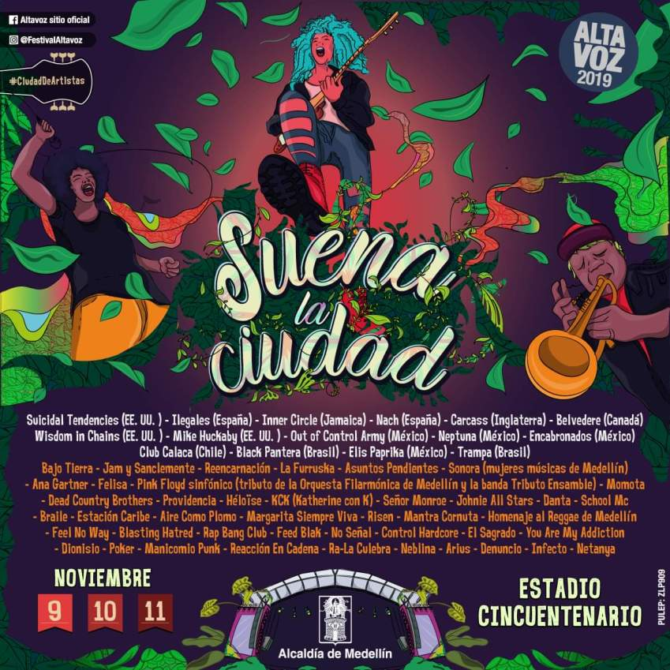
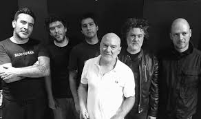

Festival Internacional Altavoz es un festival de rock que se lleva a cabo en la ciudad de Medellín (Colombia), desde el año 2004. El festival nació de la idea de crear un espacio para los jóvenes y los músicos de la ciudad expusieran su música, ya que en ocasiones anteriores se hicieron festivales de música que no duraron mucho tiempo; como lo fue el Festival de Ancón (1971 y 2004) y Rock a Lo Paisa (2000). El festival se ha realizado en tres lugares hasta el momento (Plaza de Toros La Macarena, Cancha Auxiliar del Estadio Cincuentenario y Aeroparque Juan Pablo II). Durante su primera versión se ingresaba con un juguete para los niños damnificados del invierno, y en su segunda versión la entrada era con un útil escolar, después ya la entrada era totalmente gratuita. El festival ha sido un gran eje de apoyo para los nuevos artistas de la ciudad, para que expongan su trabajo ante un gran público y con las buenas condiciones de sonido.
BANDA INVITADA-BAJO TIERRA
El grupo fue fundado por Jaime Andrés Pulgarín, Lucas Guingue y Nicolás Naranjo en 1989, proponiendo un sonido influido por el punk y el new wave, tendencias determinantes en la formación del movimiento roquero de Medellín en los años 90. 1 El nombre "Bajo Tierra" se eligió por la procedencia subterránea del grupo, al margen de los medios masivos. Con este espíritu grabaron en 1990 un EP grabado en el estudio MidiMix por el exintegrante de Nash, Víctor García.2 Para 1994, con el auge del movimiento roquero en Medellín, el grupo firmó un contrato con el sello Codiscos y grabó una larga duración del cual se escuchó en todo el país el tema "Ojos enfermos" y en algunas ciudades "Piedras de cielo" y "Champeta". Dos años después grabaron Lavandería Real, álbum producido por Federico López, del cual se conocieron las canciones "Las puertas del amor" y "El pobre", probablemente el tema más recordado de Bajo Tierra.3 Luego de un receso en 2000, el grupo se reunió en 2004 y presentaron tres años después un nuevo álbum. La propuesta de este nuevo trabajo fue retornar a la identidad de la banda en sus primeros años, de ahí surgió el nombre de Los días adelante.2 El 11 de agosto de 2018 después de más de diez años de inactividad, vuelven a los escenarios, esta vez en el Carnaval Fest 2018, donde cantaron todos sus éxitos, además de la canción Material duro junto a Alcolirycoz4.
Aqui una canción adicional de la banda